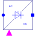

ThyristorCenterTapmPulsem pulse thyristor rectifier with center tap |

|
Diagram
{kind=link}
Information
This information is part of the Modelica Standard Library maintained by the Modelica Association.
General information about AC/DC converters can be found at the AC/DC converter concept
This is a m pulse thyristor rectifier with center tap. All voltage sources must have one interconnected plug (tap). This rectifiers works only with odd number of phases due the symmetry constrains of even phase numbers implemented in symmetricOrientation. See example Examples.ACDC.RectifierCenterTapmPulse.
Parameters (9)
| useHeatPort |
Value: false Type: Boolean Description: = true, if heatPort is enabled |
|---|---|
| T |
Value: 293.15 Type: Temperature (K) Description: Fixed device temperature if useHeatPort = false |
| useConstantEnable |
Value: true Type: Boolean Description: Disable boolean input and use constantEnable, if true |
| constantEnable |
Value: true Type: Boolean Description: Constant enabling of firing signals |
| m |
Value: 3 Type: Integer Description: Number of phases |
| RonThyristor |
Value: 1e-05 Type: Resistance (Ω) Description: Closed thyristor resistance |
| GoffThyristor |
Value: 1e-05 Type: Conductance (S) Description: Opened thyristor conductance |
| VkneeThyristor |
Value: 0 Type: Voltage (V) Description: Thyristor forward threshold voltage |
| offStart |
Value: fill(true, m) Type: Boolean[m] Description: Boolean start value of variable thyristor_p[:].off |
Connectors (5)
| ac |
Type: PositivePlug Description: AC input |
|
|---|---|---|
| dc_p |
Type: PositivePin Description: Positive DC output |
|
| heatPort |
Type: HeatPort_a Description: Conditional heat port |
|
| fire_p |
Type: BooleanInput[m] Description: Firing signals of positive potential transistors |
|
| enable |
Type: BooleanInput Description: Enables fire and notFire |
Components (5)
| andCondition_p |
Type: And[m] Description: And condition for m positive firing signals |
|
|---|---|---|
| enableLogic |
Type: EnableLogic Description: Enabling logic |
|
| thyristor |
Type: IdealThyristor Description: Thyristors conducting AC potentials |
|
| star |
Type: Star |
|
| thermalCollector |
Type: ThermalCollector |
Used in Components (1)
|
Modelica.Electrical.PowerConverters.Examples.ACDC.ExampleTemplates Template of 2*m pulse rectifier with center tap |